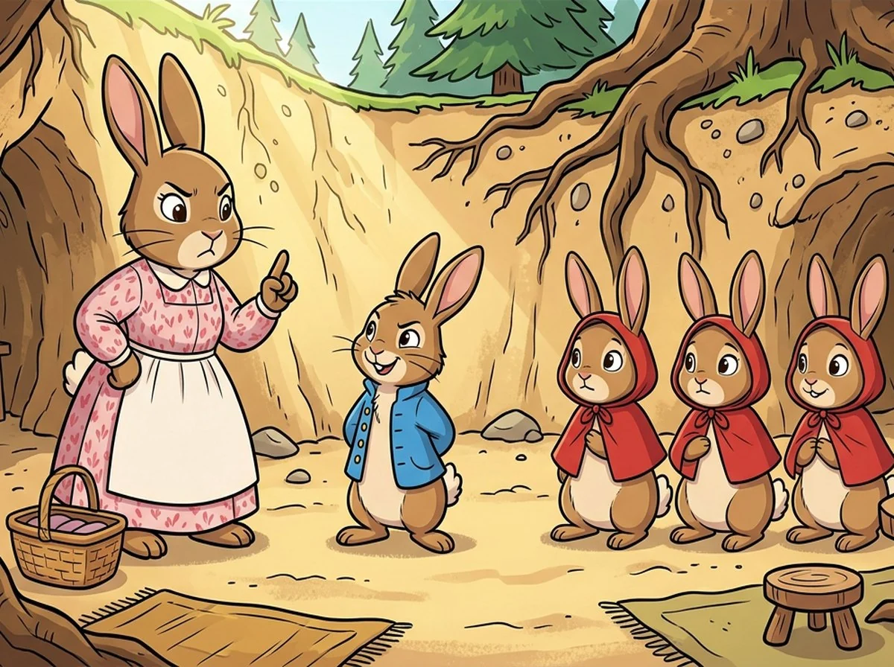

CHAPTER 01 · 第一章
千万别去菜园！
正在打开故事书……

LET'S READ TOGETHER
点气泡听英语，黄色单词可以单独点读。和家长一起，读完就回到纸质作业。
打开设备音量，每次只播放一句。
FOR GROWN-UPS
表演不调用麦克风，孩子说完后自己点“我说完了”。印章只表示完成练习，不表示发音或英语能力评估。
要清除这台设备四章的印章和练习进度吗？
A LITTLE BREAK
看看远处、伸伸胳膊。你的印章已经保存，可以和家长一起休息，稍后再回来。